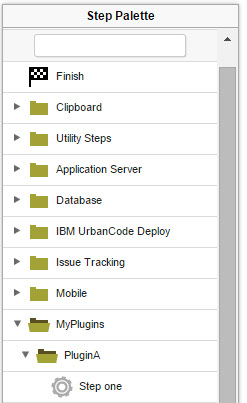

The plugin.xml file for automation plug-ins
An automation plug-in is defined with the plugin.xml file.
The structure of this file consists of a header element
and one or more step-type elements. The header element
identifies the plug-in. Each step-type element defines
a step. Steps are available to users in the process editor and are
used to construct component processes.
After the document type declaration, the plugin root
element identifies the XML schema type, PluginXMLSchema_v1.xsd, which
all plug-ins use. The following code sample presents the basic structure
of the plugin.xml file for automation plug-ins:
<?xml version="1.0" encoding="UTF-8"?>
<plugin xmlns="http://www.urbancode.com/PluginXMLSchema_v1"
xmlns:xsi="http://www.w3.org/2001/XMLSchema-instance">
<header>
<identifier id="plugin_id" version="version_number" name="Plug-in Name"/>
<description/>
<tag>Plugin type/Plugin subtype/Plugin name</tag>
</header>
<step-type name="Step_Name">
<description/>
<properties>
<property name="property_name" required="true">
<property-ui type="textBox" label="Driver Jar"
description="The full path to the jdbc driver jar to use."
default-value="${p:resource/sqlJdbc/jdbcJar}"/>
</property>
</properties>
<post-processing>
<![CDATA[
if (properties.get("exitCode") != 0) {
properties.put("Status", "Failure");
}
else {
properties.put("Status", "Success");
}
]]>
</post-processing>
<command program="${path_to_tool">
<arg value="parameters_passed_to_tool"/>
<arg path="${p:jdbcJar}"/>
<arg file="command_to_run"/>
<arg file="${PLUGIN_INPUT_PROPS}"/>
<arg file="${PLUGIN_OUTPUT_PROPS}"/>
</command>
</step-type>
</plugin>The
You can further organize specific steps into sub-folders. For example, assume that the plugin.xml file puts steps in the
<tag> tag specifies the location of the steps in the process editor
palette. This is a required tag and the tag value cannot be null. For example, the following
code specifies that the steps are in the MyPlugins/PluginA
folder.<tag>MyPlugins/PluginA</tag>
You can further organize specific steps into sub-folders. For example, assume that the plugin.xml file puts steps in the
MyPlugins/PluginA
folder, as in the previous example. The following code puts a step in the
MyPlugins/PluginA/Subgroup1
sub-folder:<step-type name="Step one">
<server:sub-tag>Subgroup1</server:sub-tag>
To organize steps into sub-folders in this way, you must add the
namespace
xmlns:server="http://www.urbancode.com/PluginServerXMLSchema_v1" to
the <plugin> tag that is at the root of the plugin.xml file,
as in the following example:<plugin xmlns="http://www.urbancode.com/PluginXMLSchema_v1"
xmlns:server="http://www.urbancode.com/PluginServerXMLSchema_v1"
xmlns:xsi="http://www.w3.org/2001/XMLSchema-instance">For information about the structure of plugin.xml for source plug-ins, see Creating source plug-ins.